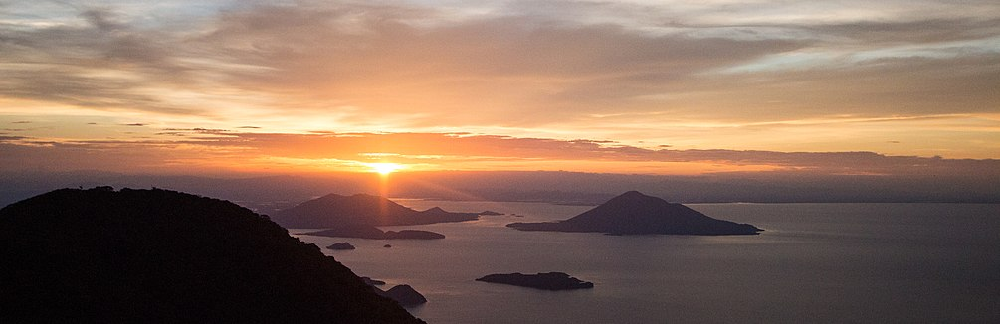
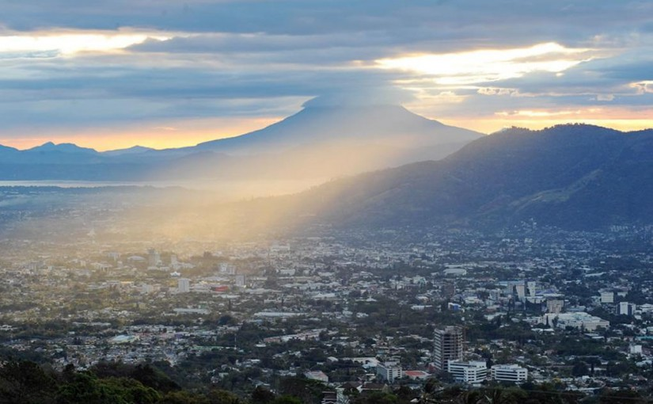

EL SALVADOR
El actual territorio de El Salvador comprende lo que antes fuera la Alcaldía Mayor de Sonsonate y lo que fue la Intendencia de San Salvador que conformó la mayor parte del territorio. Ambas provincias adquirieron su independencia de España en 1821 junto a la Capitanía General de Guatemala y en 1824 se unieron para formar el «Estado del Salvador»,15 como parte de la República Federal de Centro América. En la época precolombina, existía un importante núcleo indígena conocido como el Señorío de Cuzcatlán (que en lengua náhuatl significa ‘lugar de joyas’ o ‘lugar de collares’).
Superficie y Ubicación
Ambos países dieron por finalizada la demarcación de la frontera en el año 2006 en cumplimiento de la sentencia.
El Salvador ejerce también soberanía y jurisdicción sobre el mar, el subsuelo y el lecho marinos hasta una distancia de 200 millas marinas contadas desde la línea de más baja marea.
La demarcación de la CIJ tuvo como resultado una gran cantidad de habitantes con doble nacionalidad y muchos ciudadanos que siguen considerándose salvadoreños, siendo contados los hondureños, lo que genera problemas debido a la doble nacionalidad a la hora de votar y complicaciones a la hora de buscar asistencia pública, dado que las instituciones hondureñas se encuentran alejadas de estas zonas y las personas siguen acercándose a las instituciones salvadoreñas.
El país se encuentra limitado al norte y al noreste por la República de Honduras; al este y al sureste por el golfo de Fonseca, que lo separa de la República de Nicaragua; al sur por el océano Pacífico; y al oeste y al noroeste por Guatemala.98

Clima
La temperatura media anual (período considerado: 1950-1990117) es de 24.8 °C, presentándose la temperatura media más baja en los meses de diciembre (23.8 °C) y enero (23.9 °C), mientras que el mes más cálido es abril (32.0 °C). La precipitación media anual es de 1823 mm.
Como los termómetros de las estaciones meteorológicas van siendo influenciados por la isla de calor de las urbes, en los últimos treinta años la temperatura ha aumentado 1.2 °C,117siendo los años ochenta una de las décadas más calientes (aunque la estadística ni siquiera cubre una centuria), con precipitaciones influenciadas por el evento ENOS.

Gastronomia
¿Que són las pupusas?
Se trata de tortillas hechas de masa de maíz o de arroz que pueden rellenarse con diferentes alimentos (queso, frijoles, chicharrón. etc). Según el gusto de cada persona o se pueden preparar “revueltas”, lo que se logra mezclando varios rellenos. Dentro de nuestro artículo qué ver en Suchitoto podrás ver el taller improvisado de pupusas que realizamos en el Mercado de Abastos.
Playas
De occidente a oriente, encontrará más de 45 playas donde podrá disfrutar de cálidas aguas, revitalizantes olas y de la maravillosa espuma blanca del Océano Pacífico.
El Salvador tiene dos de las mejores playas del mundo para practicar el surf: El Sunzal y Playa La Paz. También hay magníficas olas en otras playas como El Zonte, La Perla y Punta Mango.
El Golfo de Fonseca, en el departamento de La Unión, posee aguas compartidas con Honduras y Nicaragua. Aquí se encuentra la Isla de Meanguera, la cual se accede por medio de lanchas que parten del Puerto de La Unión.